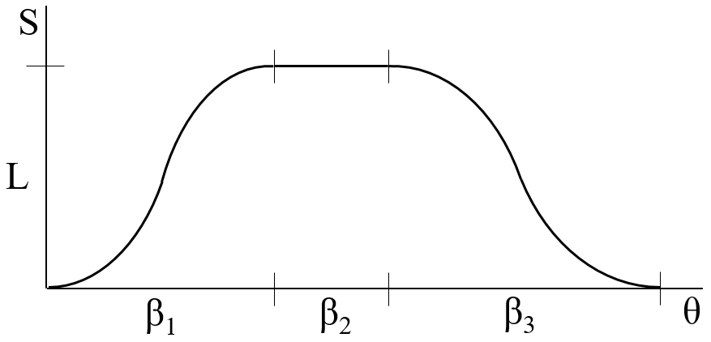
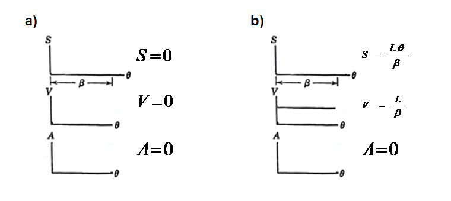
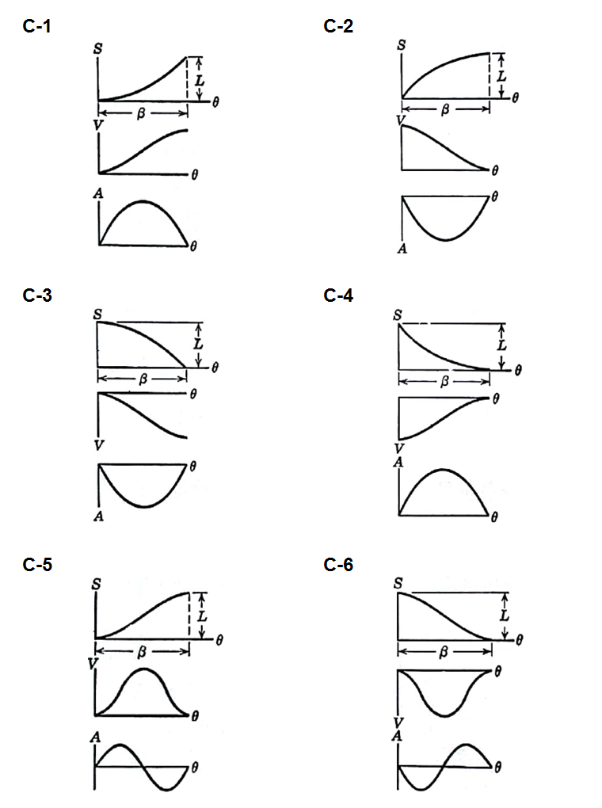
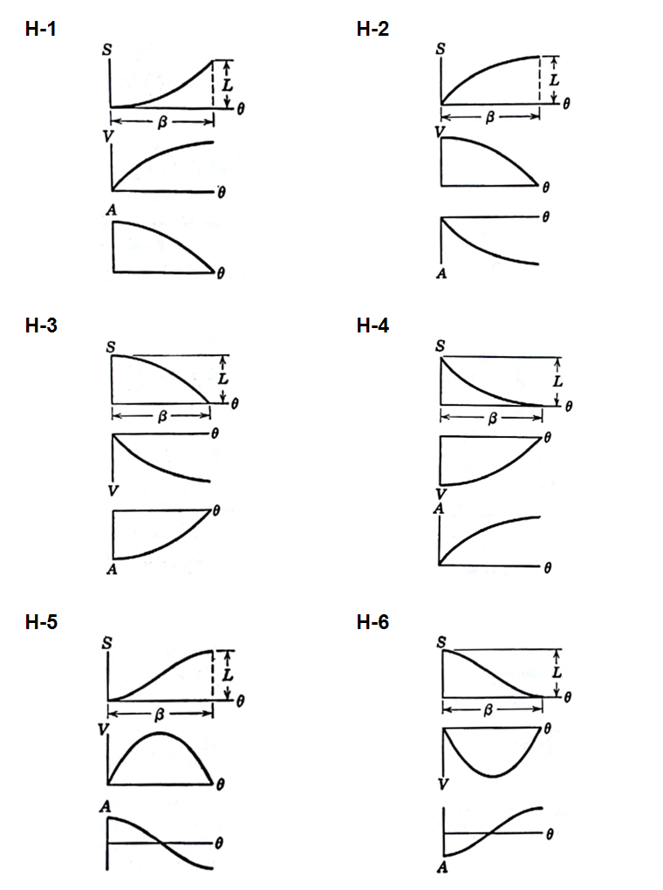
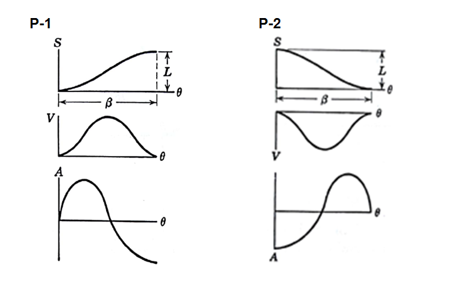

In cam synthesis, the initial question is not what the cam radius will be, but what motion the follower must execute during rotation. The answer appears in the curve \(S(\theta)\), which gives follower displacement as a function of cam angle and makes it possible to calculate velocity, acceleration and jerk.
From machine operation to \(S(\theta)\)
A cam usually has to transform continuous rotation into a sequence of actions: lifting a part, holding a position, returning, actuating a tool or synchronizing a transfer. That sequence is translated into motion intervals. Each interval occupies an angular span \(\beta\), moves the follower by a lift \(L\), and must connect correctly to the preceding and following intervals.

After the displacement curve is selected, its derivatives indicate the dynamic quality of the motion. For constant cam angular velocity, the real follower velocity is proportional to \(dS/d\theta\), and the real follower acceleration is proportional to \(d^2S/d\theta^2\).
For this reason, acceptable displacement curves are evaluated as SVAJ functions, or EVAP in some Portuguese references: displacement, velocity, acceleration and jerk. It is not enough for \(S(\theta)\) to look smooth. Velocity and acceleration must also be compatible at the junction points.
Boundary conditions
The reference slides emphasize an important design rule: match velocity and acceleration at the beginning and end of each interval. This avoids jumps between consecutive motions. When the follower leaves a dwell, for example, the next interval should begin with \(v=0\) and, in smoother designs, also with \(a=0\).
The same care applies during return. If a descending curve ends in a dwell, the final velocity must be zero. If acceleration is incompatible, the cam may still impose an abrupt force change, causing vibration, noise, loss of contact or wear.
Dwell and constant velocity
A dwell interval keeps the follower at a fixed position for part of the rotation. It is used when the machine must wait for an operation: pressing, cutting, filling, inspection, closing or transfer. In the simplest case, displacement is constant and its derivatives are zero.

Constant velocity is useful when uniform advance is desired, but it should not be connected directly to a dwell. The instantaneous jump from \(v=0\) to \(v=L/\beta\) would correspond, in the ideal model, to infinite acceleration. In practice, a transition curve is used before and after the linear interval.
Cycloidal motion and half-cycloid
Cycloidal motion is one of the classic choices for connecting dwell and motion with good smoothness. For a full rise of height \(L\) over the angle \(\beta\), using \(u=\theta/\beta\), a common expression is:
This law starts and ends with zero velocity and zero acceleration, which makes it easy to connect to dwells. Half-cycloid variants are useful when the interval only needs to start or only needs to end with selected velocity and acceleration conditions.

Simple harmonic motion
Simple harmonic motion is also common in introductory cam design because it has a simple geometric construction and compact equations. For a rise from \(0\) to \(L\), a usual expression is:
Velocity is zero at the endpoints, but acceleration is not zero at the beginning and end of the full rise. This does not make the motion useless, but it requires attention: it can be adequate when the neighboring curve accepts that acceleration, or when half-harmonic intervals are used to control the transition.

Eighth-degree polynomial
Polynomial curves are used when the designer needs to impose several boundary conditions. In normalized form, one may write:
The coefficients \(a_i\) are obtained from the desired displacement, velocity, acceleration and, when needed, additional constraints. The advantage of the eighth degree is flexibility. The disadvantage is that the result must be checked carefully, because the curve may produce acceleration or curvature peaks that are not intuitive.

Practical selection criteria
In practice, the motion law must be chosen before calculating the cam profile, but already with the resulting profile in mind. A curve with large slopes increases follower velocity and may increase pressure angle. Acceleration peaks increase inertial force. Poorly connected transitions increase jerk and vibration.
- first organize the cycle into intervals: rise, dwell, return and additional dwells;
- assign each interval its angular span \(\beta\) and lift \(L\);
- choose a motion law compatible with the start and end conditions;
- check velocity, acceleration and jerk, not only displacement;
- only then evaluate base radius, pressure angle, curvature and cusp risk in the profile.
Thus, the displacement curve works as a motion contract. The physical cam only materializes that contract as manufacturable geometry.